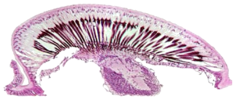

Tema 10. El sistema nervioso

• Neuronas
• Histología del sistema nervioso
• Sistema nervioso central
• El cerebro
• Cordón nervioso ventral
• Sistemas periférico y visceral
Capítulo 17. El sistema nervioso (texto)
Presentación. Sistema nervioso
Modelo 3D de cerebro
Lecturas complementarias:
• Insect neuroanatomy. Thomas Reischig
• The Insect Brain. Cronodon
• Insect Brains and Animal Intelligence. Marc Srour
• Brain and Optic Lobes. Nicholas J. Strausfeld
• Why I’m Building a Model of the Bee Brain. Andrew Barron
• Sistema nervioso. Revisión bibliográfica por Vianey Mendoza (2019).
Tema 11. Órganos de los sentidos

• Tipos de órganos sensoriales
• Órganos mecanorreceptores
• Órganos quimiorreceptores
• Órganos de la visión
Capítulo 18. Los órganos sensoriales (texto)
Presentación. Órganos sensoriales
Lecturas complementarias:
• Órganos sensoriales. Revisión bibliográfica por Elissa Chávez (2019).
Calendario de actividades 2021
11 y 13 de enero. Huevo y desarrollo embrionario.
18 y 20 de enero. Integumento, segmentación y apéndices.
25 y 27 de enero. Las extremidades cefálicas.
1 y 3 de febrero. La cabeza.
8 y 10 de febrero. El tórax y las alas.
15 y 17 de febrero. El abdomen y sus apéndices.
22 y 24 de febrero. Órganos de ingestión de ortópteros, neurópteros, coleópteros e himenópteros.
1 y 3 de marzo. Órganos de ingestión de lepidópteros, dípteros, hemípteros y homópteros.
8 y 10 de marzo. Aparatos digestivo y excretor.
15 y 17 de marzo. Aparatos circulatorio y respiratorio.
22 y 24 de marzo. El sistema nervioso.
29 y 31 de marzo. Los órganos de los sentidos.
5 y 7 de abril. Órganos reproductores internos.
12 y 14 de abril. Órganos genitales externos.
19 y 21 de abril. Evaluación del curso.
Horario
Lunes: 11:00 a 12:30
Miércoles: 12:30 a 15:00
Programa analítico
Bibliografía
para el curso
Morfología de Insectos
Blender
Versión móvil